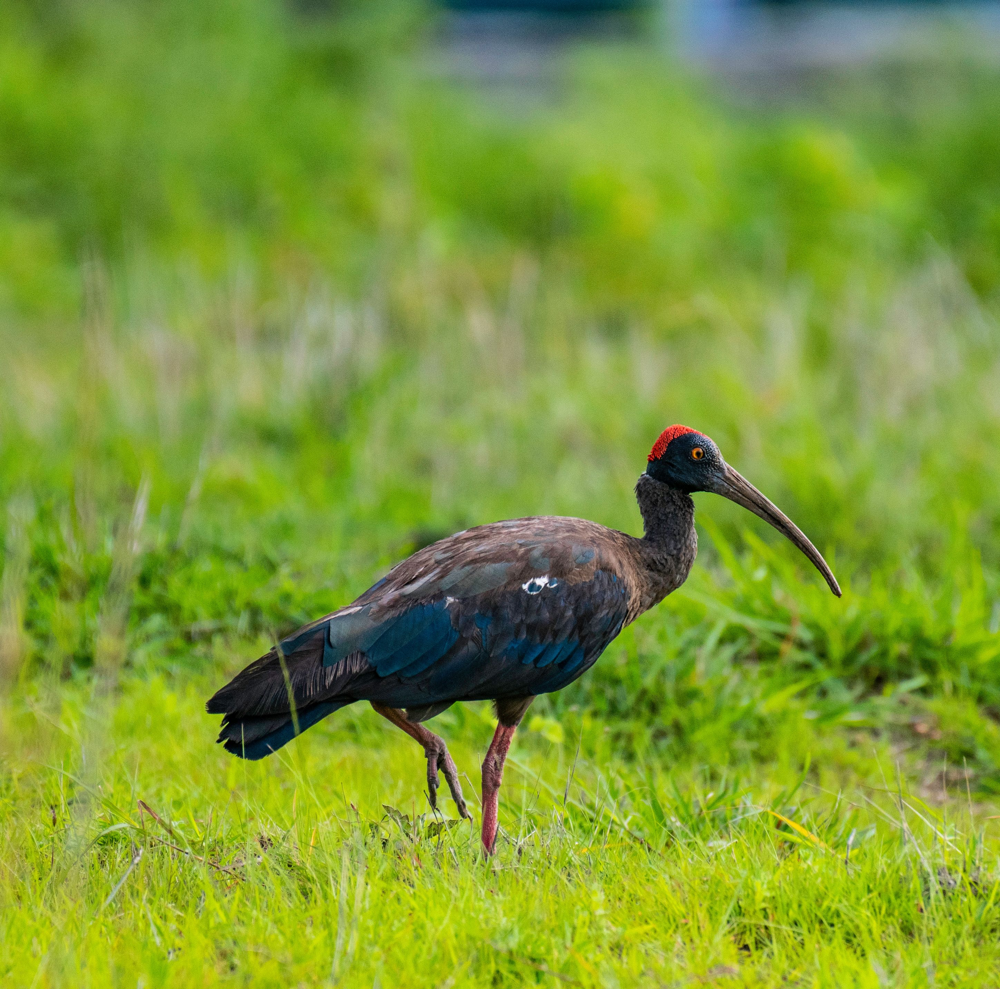

The Red-Naped Ibis is a large, dark ibis of open country, wetlands, agricultural land, and grassland. It has a long down-curved bill, long legs, and a distinctive bare red patch on the back of the neck. It often walks steadily across fields and open ground while probing the soil for insects and other food. The bare red patch on the nape, dark body, and reddish legs make it particularly easy to distinguish from other ibises found in India. Compared with the similar Black-Headed Ibis, it is distinguished by the combination of features described above. Its preference for grassland, farmland, wetlands, riverbanks, open scrub, and dry plains also helps separate it from species that use different habitats. Its characteristic behaviour, including usually forages on foot in pairs or small groups and probes soil with its long bill, provides another useful field clue. Taken together, these differences make it easier to distinguish from similar species when the bird is seen clearly.